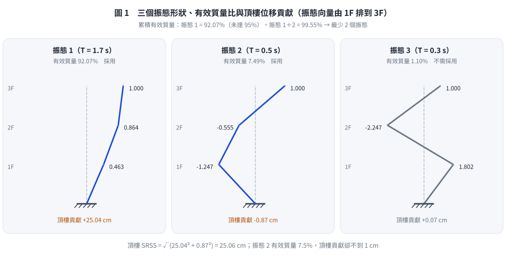

📄 題目正本：考卷原文・附圖・判讀清單（已確認）
SD-2020-2 題目正本
本檔只記錄考卷上寫了什麼、圖上畫了什麼，不含任何解法。解析見同資料夾
SD-2020-2.md。
判讀清單經使用者確認前，狀態為「待確認」；確認後本檔原則上不再修改（改動須回考卷原圖並記 log）。
| 項目 | 內容 |
|---|---|
| 考卷 | raw/exams/SD-2020_結構動力分析與耐震設計.pdf，第 1 頁（頁次 3－1），第二題 |
| 考年 | 2020（民國109年）專技高考結構工程技師「結構動力分析與耐震設計」 |
| 配分 | 25 分 |
| 附圖 | 無附圖（反應譜與振態參數皆為表格，照錄於 §1） |
| 判讀狀態 | 已確認（2026-11-15 使用者授權依 Claude 建議確認。原轉錄：2026-11-15 轉錄；PyMuPDF 110 dpi 整頁目視，PDF 文字層核對原文；盲讀於開啟解析前完成） |
1. 考卷原文（逐字）
二、假設某筆地震紀錄在結構阻尼比為 0.05 下之加速度反應譜如下：
| 週期（秒） | $0\le T<0.2$ | $0.2\le T<1$ | $1\le T<2.5$ |
|---|---|---|---|
| $S_a$（g） | $0.2+1.5T$ | $0.5$ | $0.5/T$ |
其中，$g=9.8\ \mathrm{m/sec^2}$。一個三自由度平面剪力建築，已知各樓層的質量都相等，其振態參數如下表所示：
| 性質 | 振態-1 | 振態-2 | 振態-3 |
|---|---|---|---|
| 振態週期（秒） | 1.7 | 0.5 | 0.3 |
| 振態向量 | $\begin{Bmatrix}0.46346\\0.86379\\1.00000\end{Bmatrix}$ | $\begin{Bmatrix}-1.24698\\-0.55496\\1.00000\end{Bmatrix}$ | $\begin{Bmatrix}1.80194\\-2.24698\\1.00000\end{Bmatrix}$ |
| 振態阻尼比 | 0.05 | 0.05 | 0.05 |
若依某設計規範要求，估計最大反應時需考量累積有效振態質量至少為 95% 結構總質量的低頻振態反應之貢獻合。試以最少的振態數量估算本結構頂樓的最大位移反應。其中，以 SRSS 法估算振態疊加最大反應。（25分）
2. 考卷給的公式、附表與參數
- 考卷沒有給參考公式。
- 給定：上列加速度反應譜（阻尼比 0.05、$S_a$ 以 g 計，週期定義到 $T<2.5$ 秒）、$g=9.8$ m/s²；三個振態的週期、振態向量、阻尼比（皆 0.05）；各樓層質量相等。
- 考卷沒有給：樓層質量數值、樓層勁度、樓高；振態向量各分量對應哪一樓層（表中未標樓層）。
- 卷首注意事項：㈠可以使用電子計算器。㈡不必抄題，作答時請將試題題號及答案依照順序寫在試卷上，於本試題上作答者，不予計分。㈢本科目除專門名詞或數理公式外，應使用本國文字作答。考試時間：2小時。
3. 附圖
本題無附圖。
4. 判讀清單
| # | 項目 | 判讀 | 圖上／題文依據 | 把握 |
|---|---|---|---|---|
| 1 | 振態向量分量的排列 | 由上而下列依序為一樓、二樓、頂樓（第三列 1.00000 為頂樓） | 表中未標樓層；三個振態最後一列皆正規化為 1.00000，振態-1 分量由上往下遞增（剪力建築第一振態頂樓最大），振態-3 符號變化兩次 | 確定（解讀） |
| 2 | 考卷振態數據的一致性 | 照錄考卷數值；振態-1 與振態-2、振態-3 對等質量並不精確正交（$\phi_1^T\phi_2\approx-0.057$、$\phi_1^T\phi_3\approx-0.106$），振態-2、振態-3 與等勁度三層剪力建築的精確振態一致 | 表列數值以等質量做內積檢核 | 確定 |
| 3 | $S_a$ 單位 | 以 g 為單位的擬加速度，乘 $g=9.8$ m/s² 為 m/s² | 表頭「$S_a$（g）」 | 確定 |
| 4 | 各振態週期落在反應譜哪一段 | 1.7 s → $1\le T<2.5$；0.5 s、0.3 s → $0.2\le T<1$ | 表列區間 | 確定 |
| 5 | 「頂樓的最大位移反應」 | 頂樓相對地面的位移最大值（以 SRSS 組合） | 題文 | 確定（解讀） |
| 6 | 「最少的振態數量」 | 由低頻振態起累加有效振態質量比，達 ≥95% 總質量時所需的最少振態數 | 題文「累積有效振態質量至少為 95% 結構總質量的低頻振態」 | 確定 |
| 7 | 考卷沒有給 | 樓層質量數值（各層相等，比值即可）、勁度 | 題文 | 確定 |
轉錄：2026-11-15（SD-U1-3 題目正本推廣・批 3）
確認：2026-11-15 使用者授權依 Claude 建議確認（SD-U1-3 題目正本推廣・批 3，關卡一）
考題編號：SD-2020-2
主分類： SD-U1-3 單自由度、多自由度系統之動態分析及應用
副分類： SD-U2-2 建築耐震設計規範
分析方法： 反應譜分析（SRSS振態疊加）
標籤： MDOF 3自由度 剪力建築 反應譜分析 有效振態質量 SRSS 模態參與因子 譜位移 95%質量準則 樓層位移
1. 題目（考卷原文見題目正本）
考卷原文、公式／附表、附圖與判讀清單（已確認）見
SD-2020-2-problem.md。本節只列解題時最容易讀錯的地方與本解使用的記號；題意以題目正本為準。
常見誤讀
| 項目 | 正確判讀 | 常見誤讀 |
|---|---|---|
| 振態向量排列 | 由上而下為一樓、二樓、頂樓，第三列 1.00000 為頂樓（判讀 #1） | 第一列當頂樓 |
| 振態數據 | 照錄考卷；振態 1 與振態 2、3 對等質量不精確正交（判讀 #2），有效質量比各振態分別以 $L_n^2/M_n$ 計 | 以為振態已正規化、直接用 $\phi^T\phi=1$ |
| $S_a$ | 以 g 計，乘 $g=9.8$ m/s²（判讀 #3）；$T_1=1.7$ s 落在 $0.5/T$ 段，$T_2$、$T_3$ 落在 0.5 平台（判讀 #4） | 直接當 m/s²；$T_1$ 套平台 |
| 振態數 | 由低頻起累加有效質量比至 ≥95% 的最少振態數（判讀 #6） | 一律取全部振態 |
本解記號： $\phi_{n}$ 分量依 (1F, 2F, 3F)；$\Gamma_n=L_n/M_n$、$L_n=\phi_n^T m\{1\}$、$M_n=\phi_n^T m\phi_n$；$S_{d,n}=S_{a,n}g/\omega_n^2$。
2. 考題核心精神與出題者意圖 (Core Concepts & Examiner's Intent)
核心觀念：
- 計算各振態的「有效振態質量比」，判斷最少需幾個振態達到95%
- 從反應譜讀取各振態的譜加速度→換算譜位移
- 用模態參與因子求各振態頂樓位移，SRSS組合
關鍵陷阱： 有效質量比計算：分子是 $(\phi_i^T[M]\{1\})^2$，分母是 $(\phi_i^T[M]\phi_i) \times M_{total}$，漏掉任一項都會出錯。
3. 解題戰略地圖與陷阱分析 (Strategic Roadmap & Trap Analysis)
作戰計畫：
- 設質量矩陣 $[M] = mI_{3\times3}$（均質）
- 逐振態計算 $L_i = \phi_i^T[M]\{1\}$、$M_i^* = \phi_i^T[M]\phi_i$
- 有效質量比 $\rho_i = L_i^2/(M_i^* \times 3m)$，累積至 95%
- 讀取 $Sa(T_i)$，換算 $Sd_i = Sa_i \cdot T_i^2/(4\pi^2)$
- 各振態頂樓最大位移 = $|\Gamma_i| \times |\phi_{top,i}| \times Sd_i$
- SRSS 組合
四大陷阱：
| # | 陷阱 | 正確處理 |
|---|---|---|
| 1 | 有效質量比分母忘乘 $M_{total}$ | $\rho_i = L_i^2/(M_i^* \cdot M_{total})$ |
| 2 | 振態1有效質量 > 90%，誤以為只用1個振態 | 92.07% < 95%，需加振態2 |
| 3 | 譜位移用 $Sd = Sa/g \times T^2/(4\pi^2)$ 單位混亂 | $Sd = Sa(\text{m/s}^2) \times T^2/(4\pi^2)$ → 結果單位為 m |
| 4 | 振態2有負分量，SRSS取絕對值 | SRSS = $\sqrt{\Sigma u_i^2}$，各分量先平方（自動消負號） |
3.5 變數層次分析 (Variable Hierarchy Analysis)
最終目標
頂樓（3F）最大位移 $u_{3,max}$（SRSS組合，使用最少振態滿足95%有效質量）
本題關鍵公式（依計算順序）
$$\text{Step 1: 激振向量} \quad L_i = \phi_i^T[M]\{1\} = m\sum_{j=1}^{3}\phi_{ji}$$
$$\text{Step 2: 振態質量} \quad M_i^* = \phi_i^T[M]\phi_i = m\sum_{j=1}^{3}\phi_{ji}^2$$
$$\text{Step 3: 有效質量比} \quad \rho_i = \frac{L_i^2}{M_i^* \times 3m}$$
$$\text{Step 4: 模態參與因子} \quad \Gamma_i = \frac{L_i}{M_i^*}$$
$$\text{Step 5: 譜位移} \quad S_{d,i} = \frac{T_i^2}{4\pi^2} \cdot S_{a,i}$$
$$\text{Step 6: 振態頂樓位移} \quad u_{3,i} = \Gamma_i \cdot \phi_{3i} \cdot S_{d,i}$$
$$\text{Step 7: SRSS} \quad u_{3,max} = \sqrt{u_{3,1}^2 + u_{3,2}^2}$$
L1：題目直接給定
| 符號 | 數值 | 說明 |
|---|---|---|
| $m$ | $m$（各層相等） | 樓層質量 |
| $T_1, T_2, T_3$ | 1.7, 0.5, 0.3 sec | 振態週期 |
| $\phi_i$ | 如題表 | 振態向量（1F→3F） |
| $g$ | 9.8 m/s² | 重力加速度 |
L2：需知識點推導
| 符號 | 公式／來源 | 卡關? |
|---|---|---|
| $L_1$ | $m(0.46346+0.86379+1.00000)=2.32725m$ | |
| $M_1^*$ | $m(0.46346^2+0.86379^2+1.00000^2)=1.96093m$ | |
| $\rho_1$ | $2.32725^2/(1.96093\times3)=5.4161/5.8828=92.07\%$ | |
| $L_2$ | $m(-1.24698-0.55496+1.00000)=-0.80194m$ | |
| $M_2^*$ | $m(1.24698^2+0.55496^2+1.00000^2)=2.86294m$ | |
| $\rho_2$ | $0.80194^2/(2.86294\times3)=0.6431/8.5888=7.49\%$ | |
| 累積（1+2） | $92.07\%+7.49\%=99.56\%>95\%$ ✓ |
L3：深層知識（不懂就卡住）
| 知識點 | 說明 | 卡關? |
|---|---|---|
| 有效振態質量的物理意義 | 第 $i$ 振態對地震基底剪力的貢獻比例；所有振態有效質量之和 = 總質量 | |
| 95%準則的工程依據 | 確保納入的振態能代表結構大部分動力特性，避免漏掉重要模態 | |
| SRSS 適用條件 | 各振態頻率相差超過 10%（不相關），本題 $T_1=1.7$，$T_2=0.5$ sec，差異夠大 ✓ |
4. 步驟化詳細計算過程 (Step-by-Step Detailed Calculation)
Step 1：質量矩陣與激振向量
$$[M] = m\begin{bmatrix}1&0&0\\0&1&0\\0&0&1\end{bmatrix}, \qquad \{1\} = \begin{Bmatrix}1\\1\\1\end{Bmatrix}$$
Step 2：各振態有效質量比
振態 1（$T_1 = 1.7$ sec）：
$$L_1 = m(0.46346 + 0.86379 + 1.00000) = 2.32725\,m$$
$$M_1^* = m(0.46346^2 + 0.86379^2 + 1.00000^2) = m(0.21480 + 0.74613 + 1.00000) = 1.96093\,m$$
$$\rho_1 = \frac{(2.32725m)^2}{1.96093m \times 3m} = \frac{5.4161}{5.8828} = 0.9207 = \mathbf{92.07\%}$$
→ 92.07% < 95%，單獨振態 1 不足。
振態 2（$T_2 = 0.5$ sec）：
$$L_2 = m(-1.24698 - 0.55496 + 1.00000) = -0.80194\,m$$
$$M_2^* = m(1.24698^2 + 0.55496^2 + 1.00000^2) = m(1.55496 + 0.30798 + 1.00000) = 2.86294\,m$$
$$\rho_2 = \frac{(0.80194m)^2}{2.86294m \times 3m} = \frac{0.64311}{8.58882} = 0.0749 = \mathbf{7.49\%}$$
累積有效質量比：
$$\rho_1 + \rho_2 = 92.07\% + 7.49\% = \mathbf{99.56\% > 95\%} \checkmark$$
$$\boxed{\text{最少需採用 2 個振態（振態 1 與振態 2）}}$$
Step 3：讀取譜加速度與計算譜位移
振態 1（$T_1 = 1.7$ sec，落在 $1 \leq T < 2.5$ 區間）：
$$S_{a1} = \frac{0.5}{T_1} \times g = \frac{0.5}{1.7} \times 9.8 = 0.29412 \times 9.8 = 2.8824 \text{ m/s}^2$$
$$S_{d1} = \frac{T_1^2}{4\pi^2} \times S_{a1} = \frac{1.7^2}{4\pi^2} \times 2.8824 = \frac{2.89}{39.478} \times 2.8824 = \frac{8.330}{39.478} = 0.21101 \text{ m}$$
振態 2（$T_2 = 0.5$ sec，落在 $0.2 \leq T < 1$ 區間）：
$$S_{a2} = 0.5 \times g = 0.5 \times 9.8 = 4.9 \text{ m/s}^2$$
$$S_{d2} = \frac{T_2^2}{4\pi^2} \times S_{a2} = \frac{0.25}{39.478} \times 4.9 = \frac{1.225}{39.478} = 0.031027 \text{ m}$$
Step 4：各振態頂樓（3F）最大位移
模態參與因子：
$$\Gamma_1 = \frac{L_1}{M_1^*} = \frac{2.32725m}{1.96093m} = 1.18681$$
$$\Gamma_2 = \frac{L_2}{M_2^*} = \frac{-0.80194m}{2.86294m} = -0.28011$$
各振態頂樓位移振幅：（頂樓分量 $\phi_{3,1} = \phi_{3,2} = 1.00000$）
$$u_{3,1} = |\Gamma_1| \times |\phi_{3,1}| \times S_{d1} = 1.18681 \times 1.00000 \times 0.21101 = 0.25043 \text{ m}$$
$$u_{3,2} = |\Gamma_2| \times |\phi_{3,2}| \times S_{d2} = 0.28011 \times 1.00000 \times 0.031027 = 0.008691 \text{ m}$$
Step 5：SRSS 組合
$$u_{3,max} = \sqrt{u_{3,1}^2 + u_{3,2}^2} = \sqrt{(0.25043)^2 + (0.008691)^2}$$
$$= \sqrt{0.062715 + 0.0000755} = \sqrt{0.062791}$$
$$\boxed{u_{3,max} \approx 0.2506 \text{ m} \approx 25.1 \text{ cm}}$$
振態貢獻比較：
| 振態 | $u_{3,i}$ (m) | 佔比 |
|---|---|---|
| 振態1 | 0.25043 | 99.97% |
| 振態2 | 0.00869 | 0.03% |
| SRSS | 0.25058 | — |
策略註解：振態2雖為7.49%有效質量，但其譜位移 $Sd_2 = 3.1$ cm 遠小於振態1的 $Sd_1 = 21.1$ cm，加上振態2頂樓分量等於1，最終對頂樓位移的貢獻僅0.87 cm（相比振態1的25 cm微乎其微）。這說明有效質量比大 ≠ 位移貢獻大，還需考慮譜位移的大小。

圖 1 三個振態形狀、有效質量比與頂樓位移貢獻。考卷振態向量由 1F 排到 3F（頂樓分量都是 1.000），畫反了就會把 0.46346 當頂樓；振態 1 只有 92.07%，未達 95%，必須加振態 2——但振態 2 的頂樓貢獻不到 1 cm，有效質量比大小不等於位移貢獻大小。
5. 關鍵爭議點與進階探討 (Critical Issues & Advanced Discussion)
爭議點：為何振態2有效質量7.49%，但位移貢獻卻不到1%？
振態2的週期 $T_2 = 0.5$ sec，落在加速度反應譜的平台段（$Sa = 0.5g$），而振態1的 $T_1 = 1.7$ sec 落在長週期衰減段（$Sa = 0.5/1.7g$）。
雖然振態1的加速度譜值更小，但其譜位移：
$$Sd \propto Sa \times T^2 \propto \frac{0.5}{T} \times T^2 = 0.5T$$
即長週期振態的譜位移隨 $T$ 線性增長，而短週期振態的譜位移隨 $T^2$ 增長速度更快但基值（Sa）更小。在本題 $T_1 = 1.7$ sec 的效果使 $Sd_1 = 21.1$ cm，遠超 $Sd_2 = 3.1$ cm。
工程啟示： 高樓（長週期結構）的頂樓位移由第一振態主導，且位移反應隨樓高顯著增加。
進階：是否需考慮振態3？
振態3有效質量比 = $0.55496^2/(9.29591 \times 3) = 0.30798/27.88 = 1.10\%$，加上振態1+2已達 99.56%，振態3可忽略。且 $T_3 = 0.3$ sec，$Sd_3 = 0.5 \times 9.8 \times 0.09/39.48 = 0.0112$ m（1.12 cm），頂樓位移貢獻更小。
修正日期：2026-11-15（§1 改為指向題目正本）
修正日期：2026-11-15（非勘誤）§4 Step 5 補解題圖解 figs/SD-2020-2-fig-1-modes.svg（圖解補繪，腳本 gen_SD-2020-2.py）